Thank you for purchasing Biscotti — WordPress Theme! I hope you will enjoy it! This user guide to help you get the most out of your new WordPress theme.
You have two ways to install Biscotti WordPress Theme.
To upload through your Dashboard, select “Appearance” and then “Themes”. Next, select the “Install Themes” tab at the top of the page and then select the “Upload” link, right above the search field. Choose your file and select “Install Now”. Once the theme is fully uploaded and installed, click “Activate” to activate the WordPress theme.
The theme files will be stored on your server in the wp-content/themes location.
You can use any FTP client (ex. FileZilla, Total Comander etc.).
Connect to your hosting server, select the site root folder, with wordpress CMS installed. Open the folder /wp- content/themes/ . In this folder we will install the theme.
Unzip the theme archive and upload the theme folder in the opened folder “themes”. After go to Themes section in Admin Panel and activate the new theme.
Once you installed and activated the Biscotti Theme, you will see a notice in Dashboard about required plugins. You should install and activate them.
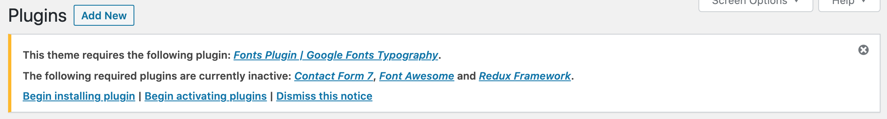A smooth 3D tilt javascript library forked from Tilt.js (jQuery version)
https://micku7zu.github.io/vanilla-tilt.js/Biscotti has the following templates built into the theme and can be applied by creating and saving a page in WordPress.
Home Template is the main page of the site and has some sections. Theme Options allow you to change them. To use these settings, go to the menu → Biscotti Options.
In this section you can change subtitle, title and upload background image.
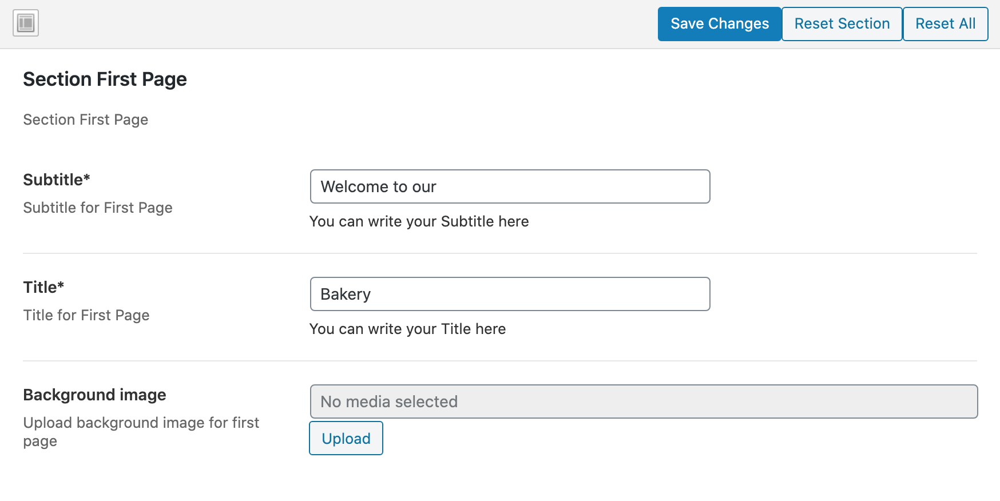In this section you can change title. Information inside cards you can edit in posts.
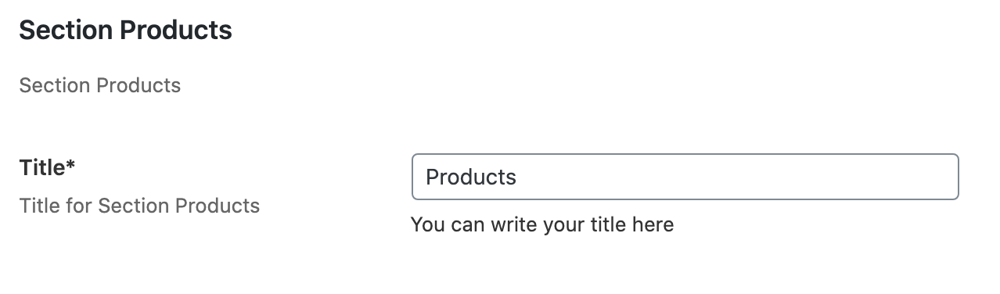In this section you can change title and text.
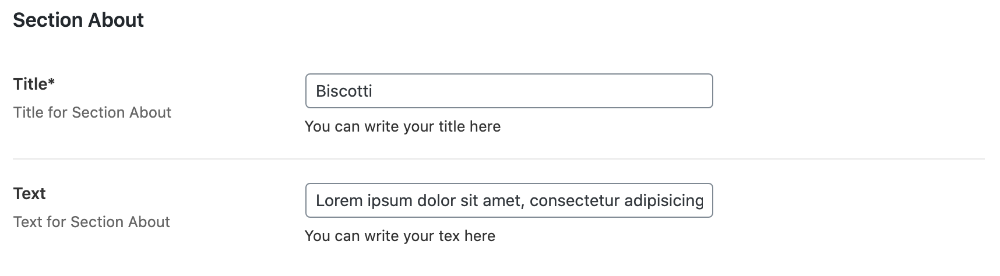In this section you can edit title, four blocks with text and upload image.
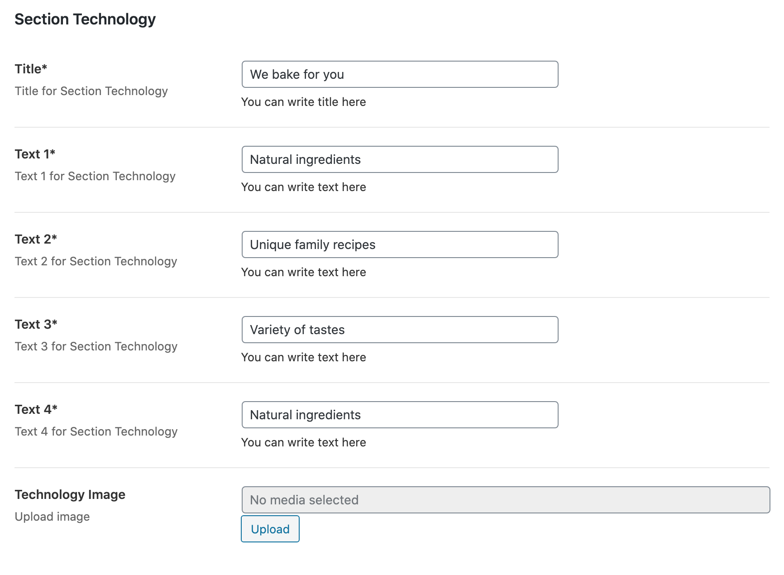In this section you can upload background image and edit Working Days/Working Hours.
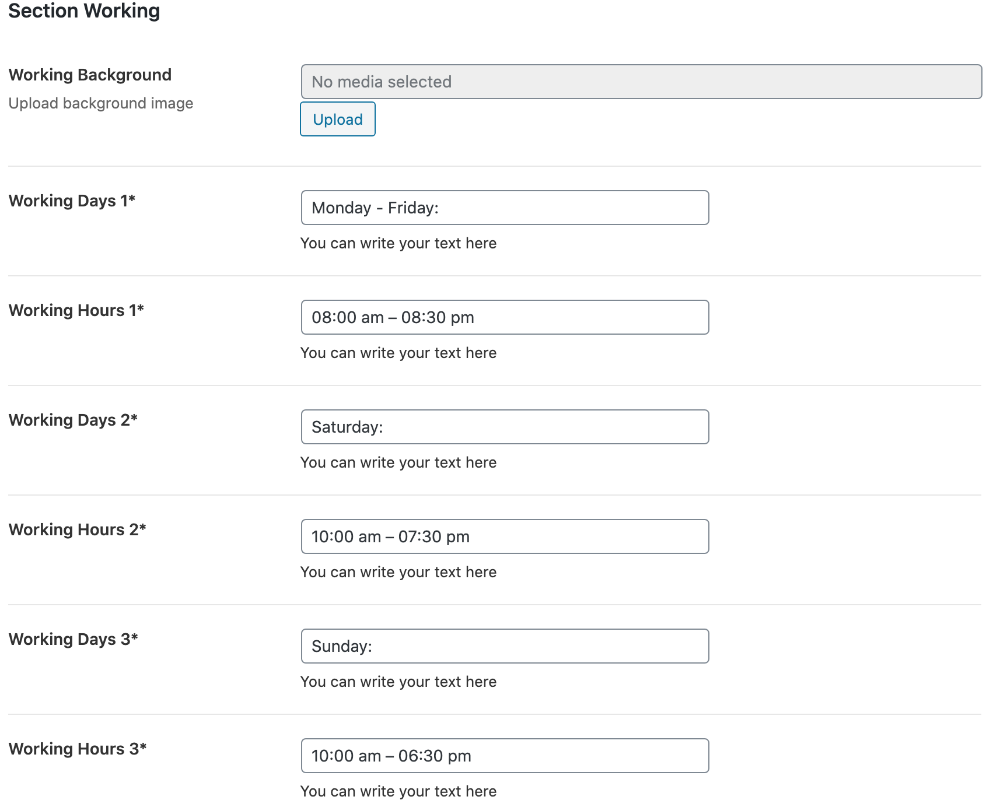In this section you can edit Custom Post Type GALLERY. You can add new images.
Footer has two parts:
Here you can change title, Font Awesome icons and write your social links.
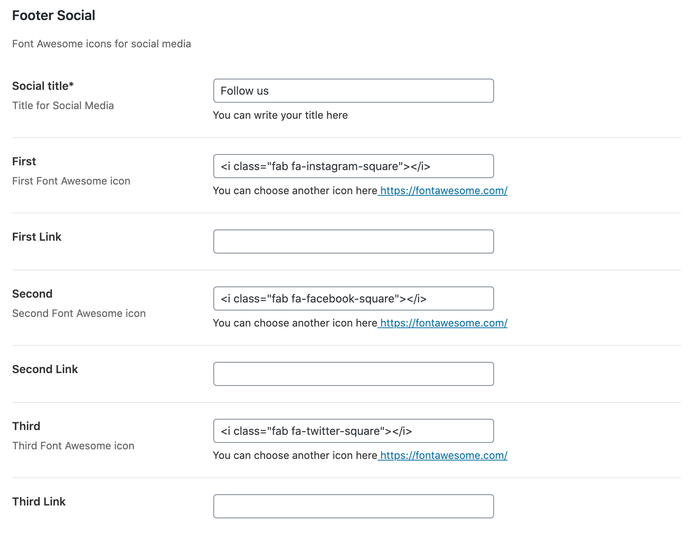Here you can change images, labels and values for fields.
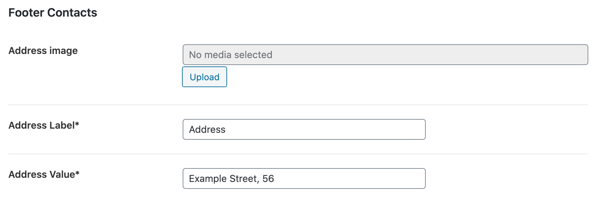 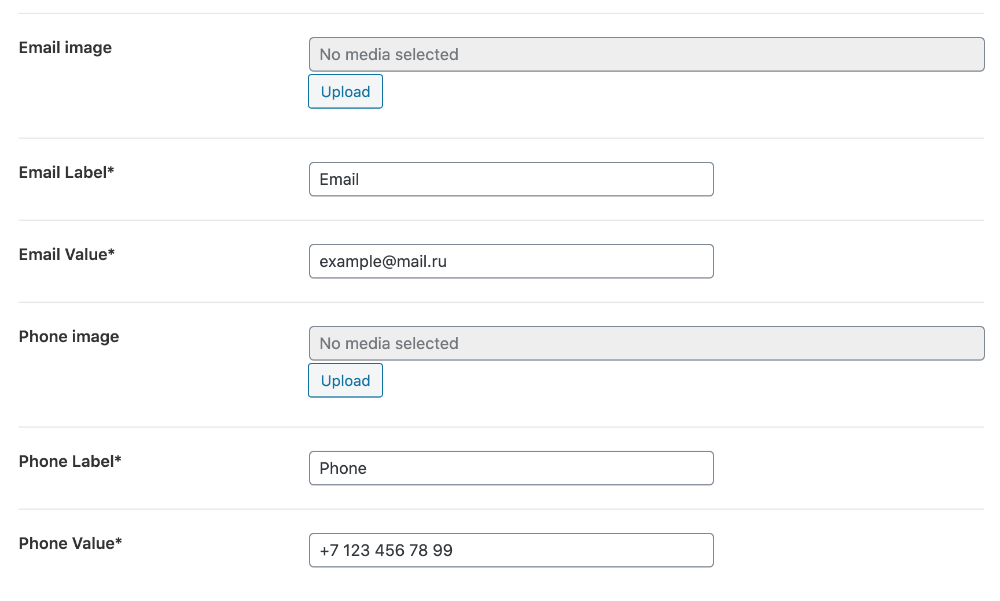Products Page get information from posts. You can edit title, image, excerpt and text (content).
Posts->Add new
On this page you can upload background image.
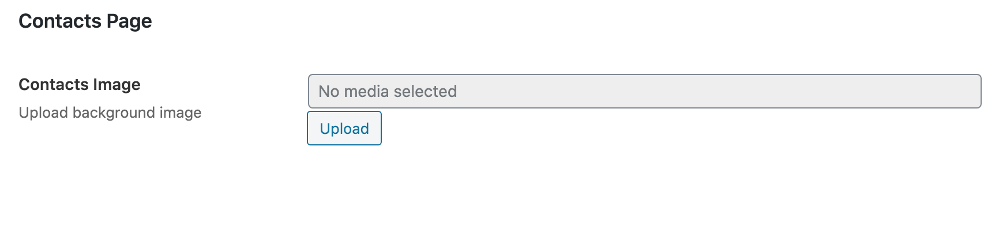Also you can edit form in the plugin Contact Form 7.
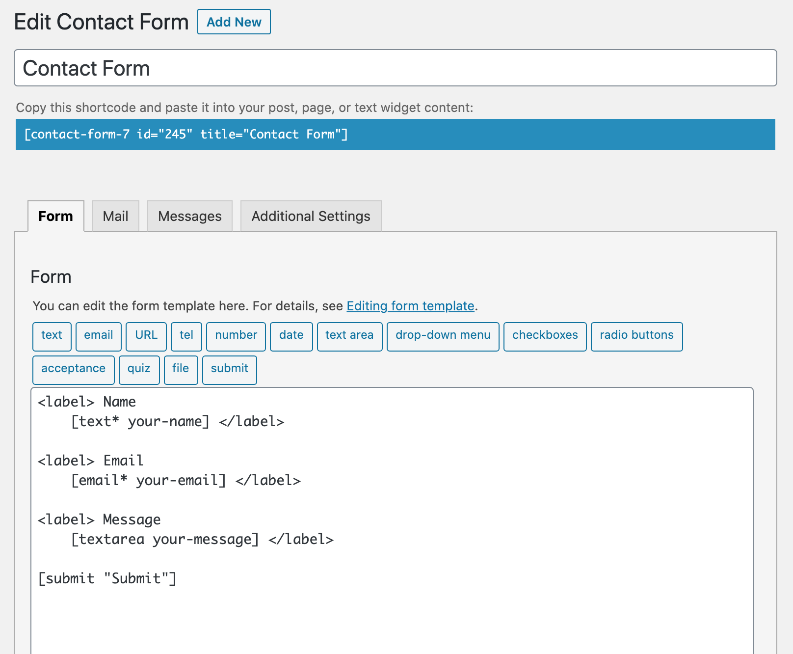